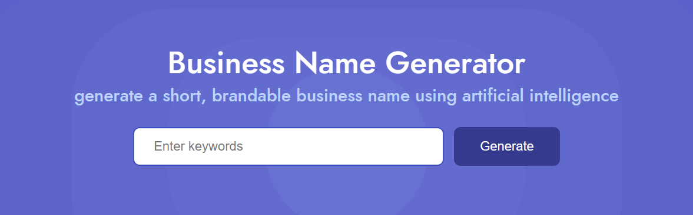

Starting a brand can be scary.
Deciding on an original name, colors, logo, and website that speak to you (and to your target market) are big commitments.
But surrounding your offering with a brand should be an enthralling, fulfilling experience.
Some people don't know how to begin, or their fear of being 'set in stone' prevents them from starting in the first place.
The following are the basics of the visual presentation of a business. Most industries should be able to go by the following 4 pillars.
My job is to eliminate the unknown for you, and I'll do that here.
Hopefully you already have an offering
Your offering, whether it's a service or a product, should always be viewed from the target market’s perspective. You've heard this before.
What problem are you solving for them? What are you making dramatically easier for them? Why does using your offering make more sense than what they already use?
It should fill a gap in your local area or in your target customer’s everyday life. More importantly it should fit into their repertoire & routine easily.
However, this blog is about creating a brand, assuming you already have an offering. That being said, I recognize 4 large decisions that orbit your offering when creating a business:
•Your name
•Your colors
•Your logo
•Your website
For SAAS, startups, & others, there's obviously much more to think about when it comes to funding, budget, staffing, accounting, legal, and infinite other boring matters. I'm only here to talk about the fun stuff!
How to come up with a good business name
Assuming you have an offering, deciding on a name should be the first/next important decision you make. The best advice I can give here is to go with your gut.
Keep it simple. You want to be named something that's easy to remember. If your last name is 5 syllables long, consider using a play on words instead. Short. Sweet. Memorable.
For local business, people often go with namesakes like The Johnson Brothers Plumbing. Or a catchy phrase like Superfoam Insulation.
Should I trademark my business name?
This is not legal counsel, but it’s suggested that you do some research to see if the name you want is taken as a live trademark. You can search the US Patent & Trademark Database and set filters to make sure you’re not infringing on someone's trademark in your industry.
Again, this is not legal advice, but I believe you can have a similar name to a trademark if your industry is completely different from that of the trademarked name.
For example there are plenty of trademarks that exist and contain “Organically,” but they pertain to different industries than my main offerings of SEO & Web Design like cosmetics and agriculture.
Crafting business name ideas
To spark some ideas, you can try services like Namelix. Namelix produces AI generated names, based on your description, that play on words & generate inspiration for different brand moods, logo styles, and color vibes.
Your name, colors, logo, & website should all blend together when drumming up the mood you want to portray.
Mood is important because it's the emotions your audience is feeling: the experience when interacting with your brand.
These are important decisions but it's best to pick something and keep moving. It's not always advisable, but you can pivot later if something no longer speaks to your vision.
Choosing business colors
Now that you have a name, you need to start thinking about colors.
Think about the mood you want your audience to exhibit when using your brand. What experience do you want to create?
Choose colors that are aligned with your message and not ones that could work against you (Webflow).
It's said that colors elicit specific emotions out of your users. For example, orange and yellow can exude joy & energy from an audience. Purple radiates royalty and tranquility.
How many brand colors should I have?
If you're stuck and can't decide, I urge you to look into color theory in the context of user interactions.
You can use a random palette generator like coolors.co to generate infinite palettes until one speaks to you.
How to make a business logo
Think about where this logo will be seen when considering contrast and colors.
Flat, rectangular-sized logos can be seen on the top left of websites, or wrapped onto a truck or box trailer.
Circular or square logos can appear on merch, website icons or backgrounds, & social profile pictures. A good logo designer can draw up digital graphics and shapes based on your vision, and slowly mould your idea into a nice visual.
Typography logos
Matching marketing & website content to your logo font boasts consistency & boosts recognition.
Designers tend to keep serif fonts (fonts with curly q’s or accents) as headings and sans-serif (fonts with no added curves) for longer text (or vice versa).
I'm using sans serif for both my headings and paragraph text right now. Some say sans serif should always be used for long text, but many books are written in serif.
The key here is to be consistent. You should not have all serif fonts for headings on one page, and sans serif for headings on another part of your website.
How to make a business website
Websites are opportunities for your audience to experience your company before actually using your offering. A good website is obvious with its rhetoric, interactive, personal, and to-the-point.
How to make a company website
Using Webflow allows you to customize nearly any aspect of HTML, CSS, and Javascript with no prior coding knowledge. I call it “photoshop for websites.”
Their platform is taught for free on YouTube & on Webflow University with swathes of informational and educational content. Their content is actually fun to learn, and the way it's taught is hilarious.
No-code platforms allow you to customize pre-made website templates, but they're often quite generic.
I’d always suggest hiring a professional designer to create a custom, memorable website. If you’re set on DIY, you can use Webflow, Wix, or others to buy a website template and make it your own.
How to find website keywords
Any search that a person makes on Google, for a specific inquiry, contributes to Search Volume (SV). The amount of websites that are trying to answer that inquiry contributes to Keyword Difficulty (KD).
You'll want to use a keyword software to show you information on keywords to include in your website. There are free keyword research tools like Ahrefs Free Keyword Generator Tool; there's also keyword metrics inside Google Ads.
You need to do your SEO due diligence or hire someone to set your website on the right path.
Website homepages should not be text heavy. Or, if you have a lot of content to explain, use a bunch of smaller blurbs of text, spaced out in different sections. No one wants to be hit with a wall of text like the one I'm typing right now. Make it easy and entertaining for someone to experience your website.
That's it I guess
• what an offering is
• what to think about when deciding on colors and a logo
• typography & font
• how to get a website & kickstart SEO